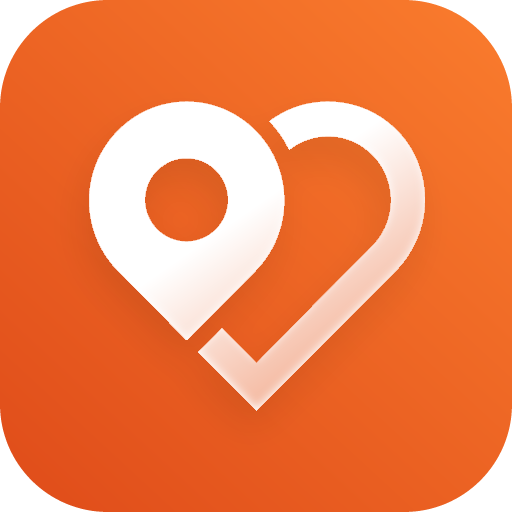

Everything that changed since the first alpha build.
Built almost entirely on your bug reports — thank you!
July 2026 · Neibo alpha test
NEWLiquid open animation. Tap the plus — the report screen unfolds out of the button like a drop, and the plus turns into a cross. Tap any tab to slide it back.
NEWStep-by-step wizard. Pick a category, then a subcategory — 33 of them, each with its own icon, laid out as big easy-to-tap tiles. Every completed step collapses into a chip you can tap to change.
NEWTaxi-style location picker. The pin stays centered — you move the map under it with one finger. Big square map, address detected automatically.
NEW500 m honesty rule. You can only report within 500 metres of where you actually are, and location is required. This keeps every marker on the map trustworthy.
NEWPhotos, done right. One "Add photo" button (camera or gallery), no forced cropping — photos upload exactly as shot. Tap any photo in the app to view it fullscreen.
NEWInstant finish. After sending you get a quick "Report added" toast and land back on the map — your report is already there, live for everyone.
NEWEvents now have a lifetime. A traffic accident lives a few hours, a water outage — until the evening, a city festival — until it ends. Each category and subcategory has its own sensible duration.
NEW"Is this still happening?" Walk past an event and Neibo may ask if it's still there. "Yes" extends its life, a couple of "no" votes clear it from the map. The community keeps the map fresh.
NEWAnnouncements. Future events (concerts, fairs, road closures) show a "Soon" badge and stay on the map until they actually end — no early removal.
NEWFeed archive. Ended events don't vanish — the feed has All / Live / Ended tabs, with a green "Live" badge next to ongoing ones.
NEWSign in your way. New welcome screen: continue as a guest in one tap, or create an account with email. Clean redesigned login with helpful error messages.
NEWNicknames. Every user gets one (change it in Settings). Your reports are now signed with your name.
NEWTeam badges. Posts by the Neibo team carry Admin / Moderator badges, and moderators can verify or clear reports — you'll see a "verified" checkmark on confirmed events.
NEWYour reports, your rules. Posted something by mistake? You can delete your own reports.
NEWGoogle-Maps-style sheet. The nearby list drags smoothly, snaps to positions and collapses to a small tab. Filters open as the same native sheets.
NEWYour radius, visible. A circle around you shows your notification area — edit the radius right from the sheet and the map zooms to fit.
NEWRealtime markers. New reports appear on everyone's map instantly — no restart needed.
NEWSearch & filters. Fullscreen search with nearest-events suggestions, plus quick category chips under the search bar.
NEWSmart clusters. Markers group into clusters; several events at the same spot open as a picker list.
NEWOpens where you are. The map starts at your location, and the map popup now shows photos, confirmations and a route button.
NEWWarm redesign. Cleaner cards, status pills next to titles, category colors, tidy filters.
NEWWhole country → city → district. Filter the feed for all of Latvia or drill down to your neighbourhood.
NEWShow on map. Jump from any post straight to its marker. News from external sources link to the original article.
FIXAndroid testers couldn't join — sign-in flow and the join page were reworked.
FIXReport location no longer defaults to the city centre — it's your real position, with a re-locate button.
FIXMarkers disappeared near screen edges while panning.
FIX"Show on map" from the feed crashed the app in some cases — and no longer teleports you to the city centre for news without an exact location.
FIXModerator actions now update everywhere instantly — no closing and reopening.
FIXKeyboard no longer covers inputs on the login and settings screens.
FIXFilter sheets sometimes didn't open; the back button in event details is now a proper in-app header.
Push notifications are off in the alpha build — the notification settings are a preview. Coming with a future release.
Auto-parsed news don't have exact map locations yet — we're working on it.
The update arrives automatically next time you open the app.
If it doesn't — fully close Expo Go and open it again.
Not in the alpha yet? Join here